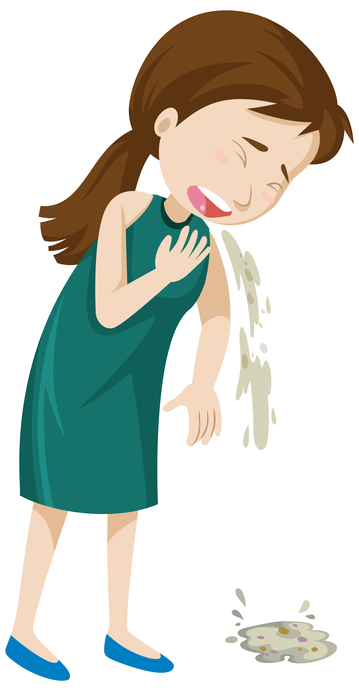
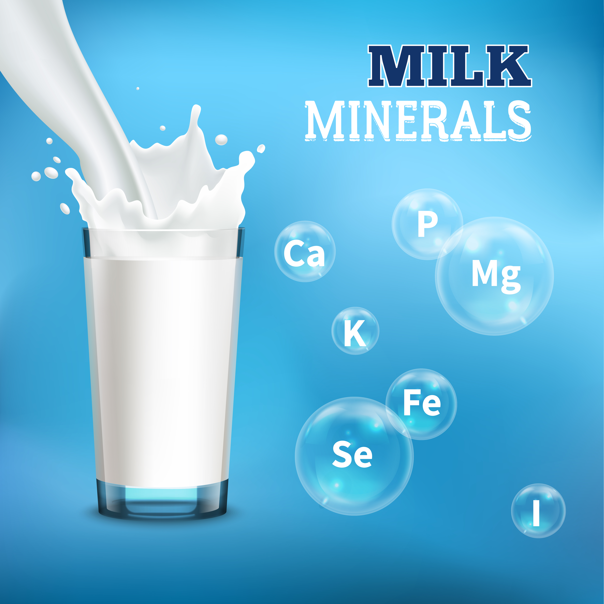

POISONING:
People, especially children, poison themselves by eating or drinking wrong things or by taking too much medicine or tablets.

Acids in batteries,
Caustic soda:
Make the person vomit by putting your finger in their throat or by making them drink water with salt. Take them to the health centre immediately.

Kerosene or petrol:
Do not make the person vomit. Give the person milk or water to drink in order to dilute the poison in the stomach. Take to the health centre immediately.